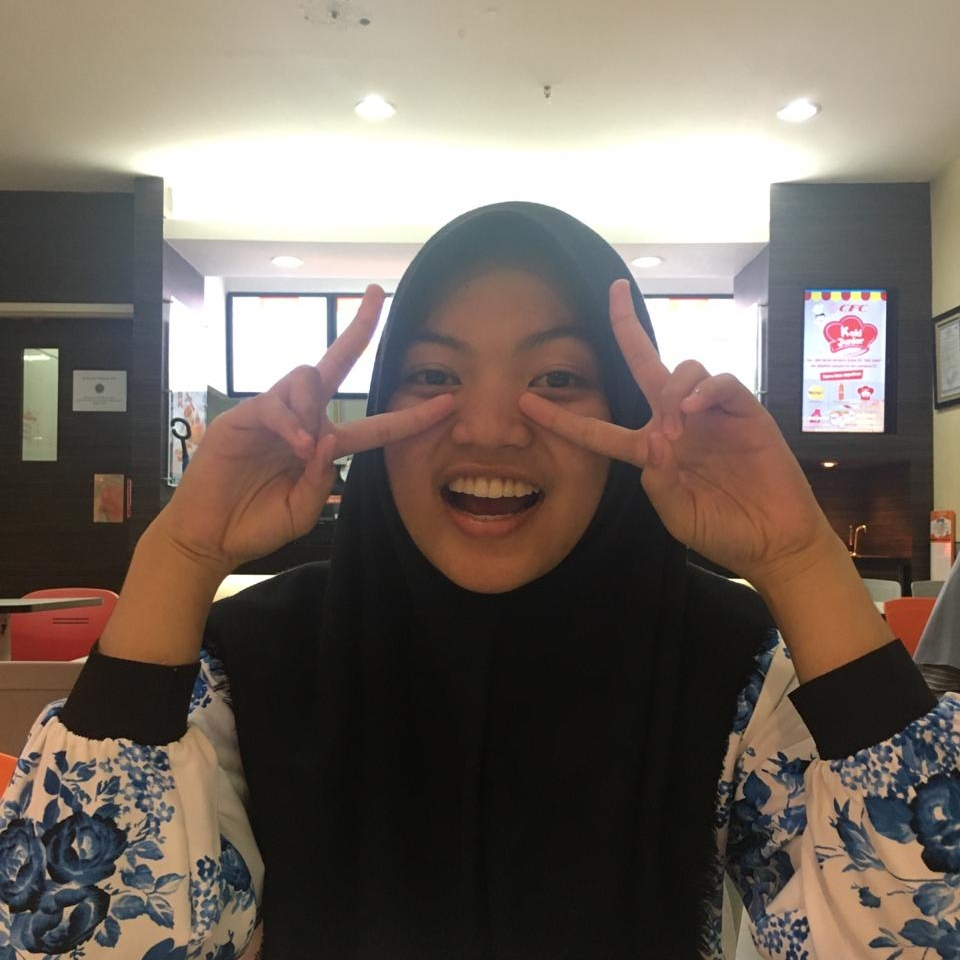

| Nama | Fathiyya Maisani Rifdah |
| Umur | 16 tahun |
| Tempat, tgl. lahir | Bogor, 17 Oktober 2004 |
| Gender | Perempuan |
| Hobi | Membaca, Bermain gitar, Menyanyi |
| Media Sosial | Instagram :@fathmr_ |
Selama pembelajaran Jarak Jauh (PJJ) ini, rasanya waktu berjalan sangat cepat. Biasanya kita harus bangun pagi- pagi untuk berangkat sekolah, sedangkan sekarang kita hanya menatap layar laptop di rumah saja. Pada awalnya sangat tidak terbiasa dengan sistem pembelajaran yang baru seperti ini, rasanya aneh. Kita hanya dapat melihat guru dan teman-teman di layar laptop saja tanpa bertemu secara langsung. Stres dan lelah pun sudah pasti dirasa, tugas yang diberikan pun sangat memberatkan dan memaksa kita untuk terus disiplin dalam memanfaatkan waktu. Rasa bosan dan jenuh sering kali melanda dan terkadang dapat menurunkan semangat belajar. Kita dipaksa untuk beradaptasi oleh keadaan dan menerima kondisi yang telah terjadi
Namun, dibalik semua itu tanpa kita sadari banyak peristiwa baru yang terjadi selama Pembelajaran Jarak Jauh (PJJ) ini. Kita bisa menggali dan mengasah bakat kita selama PJJ di rumah, sehingga potensi yang kita miliki dapat berkembang. Bahkan kita juga bisa semakin dekat dengan keluarga, mempelajari hal baru, memasak menu makanan baru dan juga menanam tanaman bersama ibu dirumah. Dibalik keresahan PJJ tentunya banyak hal kecil yang terjadi dan dapat membuat kita bahagia tanpa kita sadari.
<3